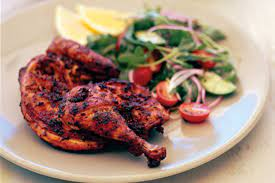

Portuguese Chicken Recipe

This Type of Chicken is a really tasty and easy recipe, ideal for those who dont want to take so much time cooking or simply want to get a quickly and good meal
Ingredients
- 2 small whhole chickens
- 80ml fresh lemon juice
- 60ml olive oil
- 2 spoons Sweet Paprika
- 2 spoons Oregano leaves
- 2 spoons Brown Sugar
- 4 garlic cloves, crushed
- 1 red chilli, finely chopped
- 1 spoon salt
- Black Pepper
- 250g tomatoes
- 1 cucumber
- 1 red onion
- 55g kalamata olives
- 2 spoons olive Oil
- 1 spoons lemon juice
- 1 spoon dried Oregano
Steps
- Clean The Chickens And Chop It into Small Cubes
- Combine lemon juice, oil, paprika, oregano, sugar, garlic, chilli, pepper and salt in a bowl. Pour over the Chicken and mix it. Cover with plastic wrap and place in the fridge for 6 hours
- Preheat the oven to 200 C. Place chicken and marinade in a roasting pan, Roast in oven, basting occasionally with pan juices, for 40 minutes. When its done remove from oven and leave it rest 5 minutes.
- Make The Salad, cut all the vegetables and place it in a bowl, season with oil, lemon juice oregano, salt and pepper. Toss to combine
- Enjoy!
To The Main Page